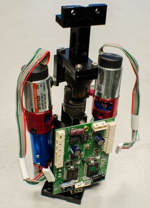
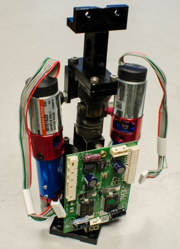

Introduction¶
The Neck contains one degree of freedom in the yaw direction and two degrees of freedom in the roll direction, allowing the head to tilt from shoulder to shoulder.

The Neck contains one degree of freedom in the yaw direction and two degrees of freedom in the roll direction, allowing the head to tilt from shoulder to shoulder.
